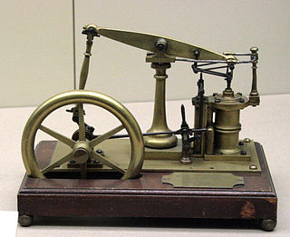
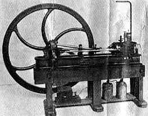
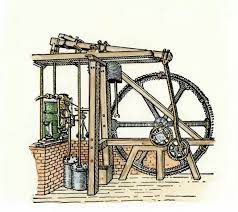
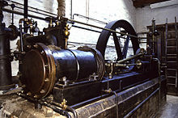
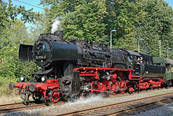
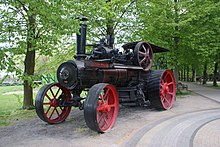

A steam engine is a heat engine that performs mechanical work using steam as its working fluid. The steam engine uses the force produced by steam pressure to push a piston back and forth inside a cylinder. This pushing force can be transformed, by a connecting rod and crank, into rotational force for work. The term "steam engine" is most commonly applied to reciprocating engines as just described, although some authorities have also referred to the steam turbine and devices such as Hero's aeolipile as "steam engines." The essential feature of steam engines is that they are external combustion engines, where the working fluid is separated from the combustion products. The ideal thermodynamic cycle used to analyze this process is called the Rankine cycle. In general usage, the term steam engine can refer to either complete steam plants (including boilers etc.), such as railway steam locomotives and portable engines, or may refer to the piston or turbine machinery alone, as in the beam engine and stationary steam engine.

-


As noted, steam-driven devices such as the aeolipile were known in the first century AD, and there were a few other uses recorded in the 16th century. In 1606 Jerónimo de Ayanz y Beaumont patented his invention of the first steam-powered water pump for draining mines.[2] Thomas Savery is considered the inventor of the first commercially used steam powered device, a steam pump that used steam pressure operating directly on the water. The first commercially successful engine that could transmit continuous power to a machine was developed in 1712 by Thomas Newcomen. James Watt made a critical improvement in 1764, by removing spent steam to a separate vessel for condensation, greatly improving the amount of work obtained per unit of fuel consumed. By the 19th century, stationary steam engines powered the factories of the Industrial Revolution. Steam engines replaced sails for ships on paddle steamers, and steam locomotives operated on the railways.

Reciprocating piston type steam engines were the dominant source of power until the early 20th century. The efficiency of stationary steam engine increased dramatically until about 1922.[3] The highest Rankine Cycle Efficiency of 91% and combined thermal efficiency of 31% was demonstrated and published in 1921 and 1928.[4] Advances in the design of electric motors and internal combustion engines resulted in the gradual replacement of steam engines in commercial usage. Steam turbines replaced reciprocating engines in power generation, due to lower cost, higher operating speed, and higher efficiency.[5] Note that small scale steam turbines are much less efficient than large ones.[6] Large reciprocating piston steam engines are still being manufactured in Germany.[7]
As noted, one recorded rudimentary steam-powered engine was the aeolipile described by Hero of Alexandria, a Greek mathematician and engineer in Roman Egypt in the first century AD.[8] In the following centuries, the few steam-powered engines known were, like the aeolipile,[9] essentially experimental devices used by inventors to demonstrate the properties of steam.

A rudimentary steam turbine device was described by Taqi al-Din[10] in Ottoman Egypt in 1551 and by Giovanni Branca[11] in Italy in 1629.[12] The Spanish inventor Jerónimo de Ayanz y Beaumont received patents in 1606 for 50 steam-powered inventions, including a water pump for draining inundated mines.[13] Frenchman Denis Papin did some useful work on the steam digester in 1679, and first used a piston to raise weights in 1690.[14]
